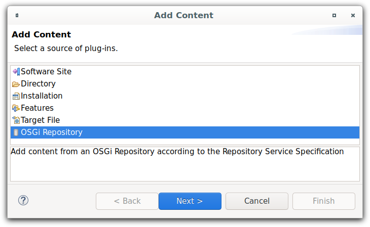
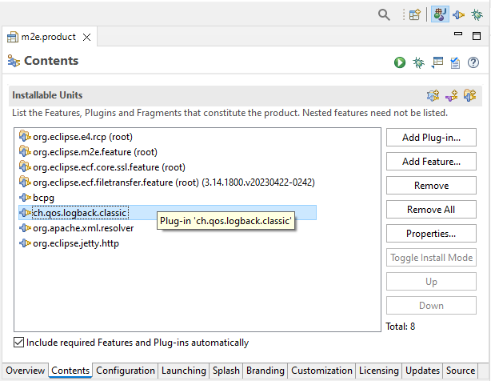
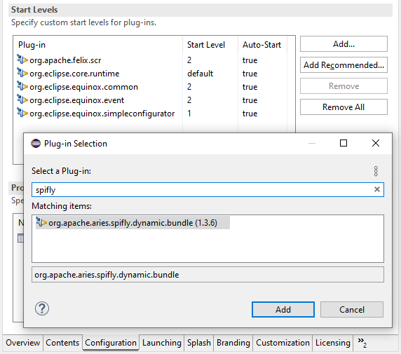

Here are descriptions of some of the more interesting or significant changes made to the Plug-in Development Environment (PDE) for the 4.29 release of Eclipse. They are grouped into:
Editors |
|
| New OSGi Repository Target Location Type |
The OSGi Specification defines a XML format for representing a repository as defined in "132 Repository Service Specification" that allows to hold "Resources" with requirements and capabilities.
Such a repository usually contains a set of bundles and is very similar to what we have today with P2 updatesites, to improve interfacing of PDE with such repositories this adds a new target location type "Repository" where content can be used as usual.
 |
| Support for mixed Products |
The PDE Product Editor now supports mixed products, which consist of both Plug-ins and Feature.
On the Overview page of the Product, just select
The product configuration is based on: plug-ins and feature
and you can add Plug-ins and Features to the Product in the Contents page of the editor.
You can launch mixed products as usual from the IDE via shortcuts in the  |
| Enhanced Start Levels configuration in Products |
For Products the specification of Plug-in Start Levels in the Configuration page of the Product-Editor has been enhanced.
 |